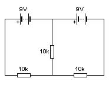

Electrónica analógica 4º E.S.O.
Apéndice I: Leyes de Kirchhoff.
|
 |
Intentemos resolver, con lo que sabemos hasta
ahora, un circuito como el de la figura de la derecha. Sin duda, lo tendremos
complicado. Por no decir, imposible.
En este tipo de circuitos (que
parecen dos circuitos sencillos, pero "pegados" entre sí"), hay que utilizar
dos herramientas nuevas, que fueron descubiertas por el físico alemán Gustav
Robert Kirchoff, son conocidas como las leyes de Kirchhoff.
Pero antes de conocer las leyes
de Kirchoff vamos con unos conceptos previos.
En un circuito, se le dice malla
a todo recorrido que puede hacerse dentro del circuito, que empiece y acabe en
un mismo punto. En nuestro circuito, por ejemplo, habría 3 mallas.
Se llama nudo al punto en el que se unen dos o más cables (lo que un electricista llamaría "empalme"). En nuestro caso, habría dos nudos.
Sabido esto, vamos con las leyes ya mencionadas.

|
Primera Ley de Kirchoff o ley de los nudos |
| En cualquier nudo de un circuito, la suma de las intensidades que llegan a un nudo es igual a la suma de las intensidades que salen del mismo. |
| Segunda Ley de Kirchoff o ley de las mallas |
|
| La suma neta de las tensiones de una malla es cero. |
Podemos imaginarnos que en cada malla hay una intensidad, y que en el
tramo que hay común a dos mallas hay dos intensidades que van en direcciones
contrarias.
Para tener éxito usando las leyes de Kirchoff sólo necesitas tener en cuenta:
- Contar bien las mallas existentes.
- Elige un sentido de circulación adecuado para las intensidades de cada malla, y manténlo.
- Cuando encuentres una pila, el signo de la tensión será el del polo por el que entres.
Con esto, para resolver el circuito que hemos
planteado arriba necesitaremos resolver un sistema de dos ecuaciones con dos
incógnitas.
Practica un poco
Resuelve ahora en tu
cuaderno el circuito que hemos estado viendo.
Obra publicada con Licencia Creative Commons Reconocimiento No comercial Compartir igual 4.0